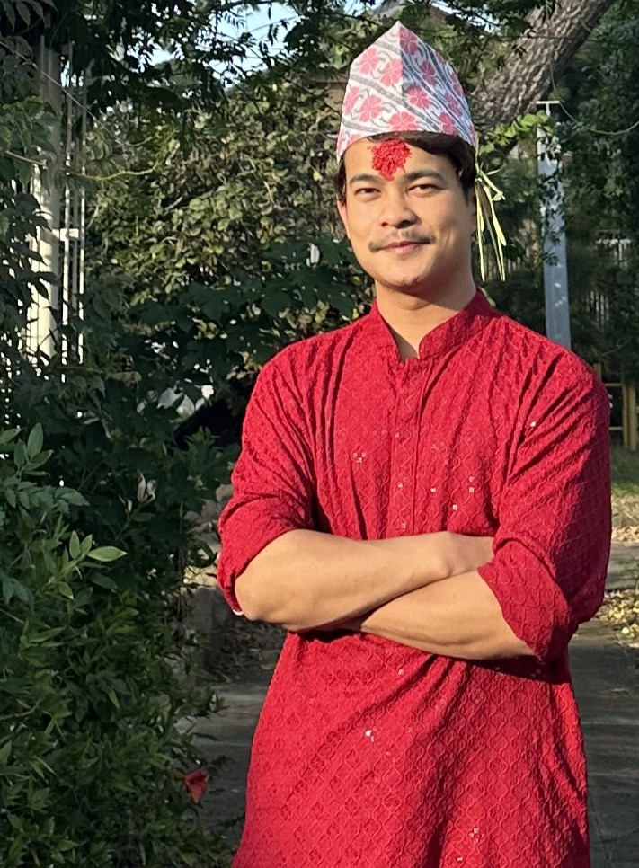

はじめまして。ビセスと申します。ネパール出身で、2022年に来日しました。
私の家族は5人で、父、母、兄、妹、そして私です。家族はネパールに住んでおり、私の留学をいつも応援してくれています。家族の支えがあるからこそ、日本でも前向きに学び続けることができています。
現在は、千葉モードビジネス専門学校でITビジネスを専攻しており、2026年3月に卒業予定です。母国ではビジネスマネジメントを学びましたが、日本ではITスキルを活かしたキャリアを築きたいと考え、Web開発に力を入れて勉強しています。
特にHTMLとCSSを使ったフロントエンド開発に興味があり、ポートフォリオ制作やデザインの勉強を通じてスキルを高めています。卒業後は、日本の企業でWeb制作やシステム開発にたずさわることをめざしています。
人の笑顔を見るのが好きで、自分の行動や仕事を通じて誰かを喜ばせたり、笑顔にできたときに大きなやりがいを感じます。そのためにも、技術力だけでなく思いやりのある姿勢も大切にしています。
どうぞよろしくお願いいたします。